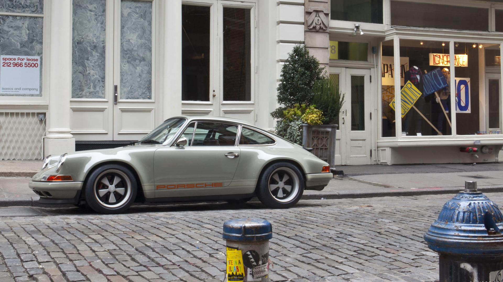

Amerikan mühendisliği ve İngiliz mentalitesi ile şekillen Alman klasiğinin bir Rock grubu ile ne alakası olabilir? Mevzubahis şirket çok sevilen Singer ise bütün dediklerimiz gayet mümkün. Genç tasarım ve geliştirme şirketinin 3 yıllık bekleme listelerine neden olan unsurlara göz atalım. Bu unsuların biri en az 8 ay süren üretim ve test süreci. Otomobilin neredeyse her komponenti yenilendiği için otomobilin geldiği zamanki kondisyonunun büyük fark yarattığını söylemek zor. Başka bir unsur ise talep, her şeyi ile daha iyi bir şekil alan 964 ve bu seçkin garaj tarafından yenilenmenin getirdiği koleksiyon değeri inanılmaz.
En yüksek kalite malzeme ve işçiliğin kullanıldığı iç mekan muhteşem görünüyor. Yepyeni olsa bile hala konservatif; dijital göstergeler, ekran, tuhaf butonlar veya fütüristik bir dizayn yok. Geleneksel malzemeler; deri, krom, ahşap ve güzel olan her şey mevcut. Yine geleneksel vites topuzu tasarımı, krom çerçeveli göstergeler ile bulunmaktan memnun olacağınız bir yer. Peki otomobilin kendisi geleneksel mi?
Pek sayılmaz ama tutucu olunan bir nokta daha var... Hava soğutma.
Ama sanırım gelenekselcilik oyunu burada bitiyor, K&W veya Öhlins süspansiyon, Brembo frenler, modern 911'den devşirilen ABS sistemi, modern ECU ile kullanması daha insansı bir otomobil. Ruhu baltalamadığı sürece modernizasyon iyidir. Şirketin sahibi Rob Dickinson'ın dediği gibi Rolex gibi inşa edilmiş ve silah gibi giden bir otomobil. 4 litre hava soğutmalı (daha az tercih edilen 3.8 litre de mevcut) ünite ise beklenmedik derecede güçlü. 400 beygir civarında güç üreten bu üniteler ile klasik bir görüntü altında şaşırtıcı derecede hızlı olmak mümkün. Tercihler ile 7 hanelere kadar çıkan bir fiyat etiketi söz konusu.
